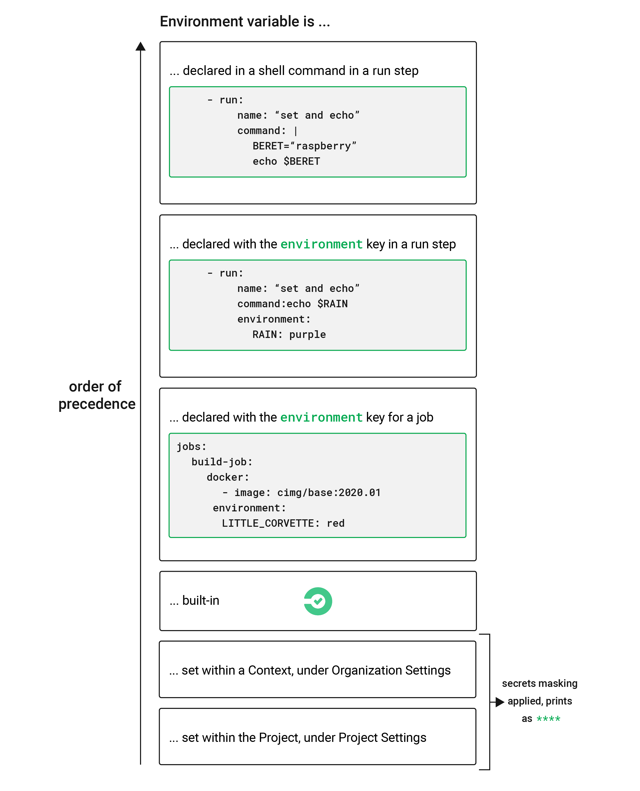
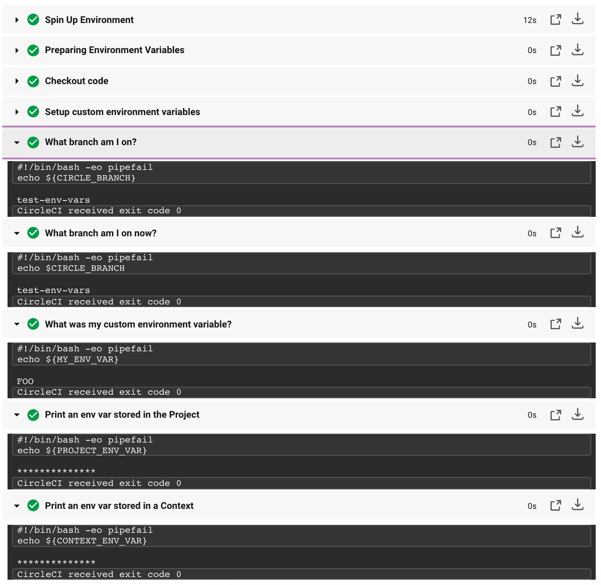
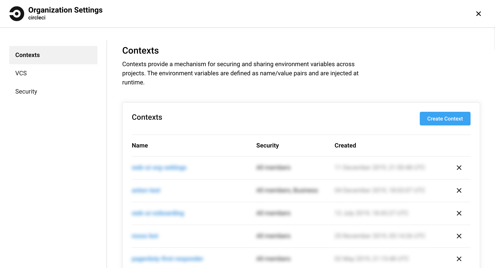
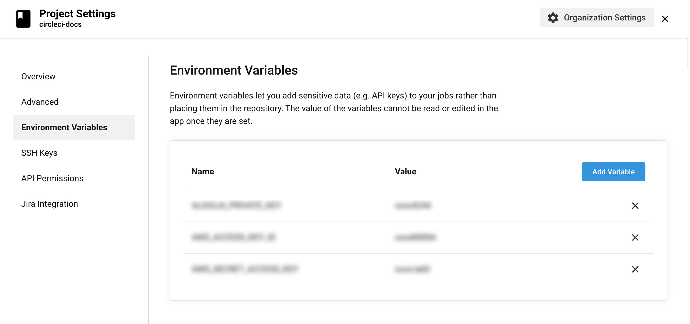

Using Environment Variables
This document describes using environment variables in CircleCI in the following sections:
- Secrets Masking
- Renaming Orgs and Repositories
- Environment Variable Usage Options
- Setting an Environment Variable in a Shell Command
- Setting an Environment Variable in a Step
- Setting an Environment Variable in a Job
- Setting an Environment Variable in a Context
- Setting an Environment Variable in a Project
- Setting an Environment Variable in a Container
- Injecting Environment Variables with API v2
- Injecting Environment Variables with API v1
- Built-in Environment Variables
Overview
There are several ways to use environment variables in CircleCI to provide variety in scope and authorization level. Environment variables are governed by an order of precedence, depending on how they are set, allowing control at each level in your configuration.
To add private keys or secret environment variables for use throughout your private project, use the Environment Variables page under Project Settings in the CircleCI application. The variable values are neither readable nor editable in the app after they are set. To change the value of an environment variable, delete the current variable and add it again with the new value.
Private environment variables enable you to store secrets safely even when your project is public. Refer to the Building Open Source Projects page for associated settings information.
Use Contexts to further restrict access to environment variables. Contexts are set from the Organization Settings in the CircleCI application. For more information about controlling access to env vars with Contexts, refer to the Restricting a Context documentation.
Secrets Masking
Secrets Masking is applied to environment variables set within Project Settings or under Contexts. Environment variables may hold project secrets or keys that perform crucial functions for your applications. Secrets masking provides added security within CircleCI by obscuring environment variables in the job output when echo or print are used.
The value of the environment variable will not be masked in the build output if:
- the value of the environment variable is less than 4 characaters
- the value of the environment variable is equal to one of
true,True,falseorFalse
Note: Secrets Masking will only prevent the value of the environment variable from appearing in your build output. The value of the environment variable is still accessible to users debugging builds with SSH.
Renaming Orgs and Repositories
If you find you need to rename an org or repo that you have previously hooked up to CircleCI, best practice is to follow these steps:
- Rename org/repo in VCS.
- Head to the CircleCI application, using the new org/repo name, for example,
app.circleci.com/pipelines/<VCS>/<new-org-name>/<project-name>. - Confirm that your plan, projects and settings have been transferred successfully.
- You are then free to create a new org/repo with the previously-used name in your VCS, if desired.
Note: If you do not follow these steps, it is possible that you may lose access to your org or repo settings, including environment variables and contexts.
Environment Variable Usage Options
CircleCI uses Bash, which follows the POSIX naming convention for environment variables. Valid characters include letters (uppercase and lowercase), digits, and the underscore. The first character of each environment variable must be a letter.
Order of Precedence
Environment variables are used according to a specific precedence order, as follows:
- Environment variables declared inside a shell command in a
runstep, for exampleFOO=bar make install. - Environment variables declared with the
environmentkey for arunstep. - Environment variables set with the
environmentkey for a job. - Special CircleCI environment variables defined in the CircleCI Built-in Environment Variables section of this document.
- Context environment variables (assuming the user has access to the Context). See the Contexts documentation for instructions.
- Project-level environment variables set on the Project Settings page.
Environment variables declared inside a shell command run step, for example FOO=bar make install, will override environment variables declared with the environment and contexts keys. Environment variables added on the Contexts page will take precedence over variables added on the Project Settings page.

Notes on Security
Do not add secrets or keys inside the .circleci/config.yml file. The full text of config.yml is visible to developers with access to your project on CircleCI. Store secrets or keys in project or context settings in the CircleCI app. For more information, see the Encryption section of the Security document.
Running scripts within configuration may expose secret environment variables. See the Using Shell Scripts document for best practices for secure scripts.
Example Configuration of Environment Variables
Consider the example config.yml below:
version: 2.1
jobs: # basic units of work in a run
build:
docker: # use the Docker executor
# CircleCI node images available at: https://hub.docker.com/r/circleci/node/
- image: circleci/node:10.0-browsers
steps: # steps that comprise the `build` job
- checkout # check out source code to working directory
# Run a step to setup an environment variable
# Redirect MY_ENV_VAR into $BASH_ENV
- run:
name: "Setup custom environment variables"
command: echo 'export MY_ENV_VAR="FOO"' >> $BASH_ENV
- run: # print the name of the branch we're on
name: "What branch am I on?"
command: echo ${CIRCLE_BRANCH}
# Run another step, the same as above; note that you can
# invoke environment variable without curly braces.
- run:
name: "What branch am I on now?"
command: echo $CIRCLE_BRANCH
- run:
name: "What was my custom environment variable?"
command: echo ${MY_ENV_VAR}
- run:
name: "Print an env var stored in the Project"
command: echo ${PROJECT_ENV_VAR}
- run:
name: "Print an env var stored in a Context"
command: echo ${CONTEXT_ENV_VAR}
workflows: # a single workflow with a single job called build
build:
jobs:
- build:
context: Testing-Env-Vars
The above config.yml demonstrates the following:
- Setting custom environment variables
- Reading a built-in environment variable that CircleCI provides (
CIRCLE_BRANCH) - How variables are used (or interpolated) in your
config.yml - Secrets masking, applied to environment variable set in the project or within a Context.
When the above config runs, the output looks like this. Notice the env var stored in the Project is masked, and displays as ****:

Notice there are two similar steps in the above image and config - “What branch am I on?”. These steps illustrate two different methods to read environment variables. Note that both ${VAR} and $VAR syntaxes are supported. You can read more about shell parameter expansion in the Bash documentation.
Using Parameters and Bash Environment
CircleCI does not support interpolation when setting environment variables. All defined values are treated literally. This can cause issues when defining working_directory, modifying PATH, and sharing variables across multiple run steps.
In the example below, $ORGNAME and $REPONAME will not be interpolated.
working_directory: /go/src/github.com/$ORGNAME/$REPONAME
Using version:2.1 config, you can reuse pieces of config across your config.yml. By using the parameters declaration, you can interpolate (or, “pass values”) into reusable commands jobs and executors:
version: 2.1
jobs:
parameters:
org_name:
type: string
default: my_org
repo_name:
type: string
default: my_repo
my_job:
docker:
- circleci/node:12.15.0
working_directory: /go/src/github.com/<< parameters.org_name >>/<< parameters.repo_name >>
For more information, read the documentation on using the parameters declaration.
Another possible method to interpolate values into your config is to use a run step to export environment variables to BASH_ENV, as shown below.
steps:
- run:
name: Setup Environment Variables
command: |
echo "export PATH=$GOPATH/bin:$PATH" >> $BASH_ENV
echo "export GIT_SHA1=$CIRCLE_SHA1" >> $BASH_ENV
In every step, CircleCI uses bash to source BASH_ENV. This means that BASH_ENV is automatically loaded and run,
allowing you to use interpolation and share environment variables across run steps.
Note:
The $BASH_ENV workaround only works with bash. Other shells probably won’t work.
Alpine Linux
An image that’s based on Alpine Linux (like docker), uses the ash shell.
To use environment variables with bash, just add these 2 parameters to your job.
version: 2.1
jobs:
build:
shell: /bin/sh -leo pipefail
environment:
- BASH_ENV: /etc/profile
Setting an Environment Variable in a Shell Command
While CircleCI does not support interpolation when setting environment variables, it is possible to set variables for the current shell by using BASH_ENV. This is useful for both modifying your PATH and setting environment variables that reference other variables.
version: 2.1
jobs:
build:
docker:
- image: smaant/lein-flyway:2.7.1-4.0.3
steps:
- run:
name: Update PATH and Define Environment Variable at Runtime
command: |
echo 'export PATH=/path/to/foo/bin:$PATH' >> $BASH_ENV
echo 'export VERY_IMPORTANT=$(cat important_value)' >> $BASH_ENV
source $BASH_ENV
Note:
Depending on your shell, you may have to append the new variable to a shell startup file like ~/.tcshrc or ~/.zshrc.
For more information, refer to your shell’s documentation on setting environment variables.
Setting an Environment Variable in a Step
To set an environment variable in a step, use the environment key.
version: 2.1
jobs:
build:
docker:
- image: smaant/lein-flyway:2.7.1-4.0.3
steps:
- checkout
- run:
name: Run migrations
command: sql/docker-entrypoint.sh sql
# Environment variable for a single command shell
environment:
DATABASE_URL: postgres://conductor:@localhost:5432/conductor_test
Note:
Since every run step is a new shell, environment variables are not shared across steps. If you need an environment variable
to be accessible in more than one step, export the value using BASH_ENV.
Setting an Environment Variable in a Job
To set an environment variable in a job, use the environment key.
version: 2.1
jobs:
build:
docker:
- image: buildpack-deps:trusty
environment:
FOO: bar
Setting an Environment Variable in a Context
-
In the CircleCI application, go to your organization settings by clicking the link in the left hand navigation.

- Select the Context you want to associate your envorinment variable with, or create a new one by clicking the Create Context button.
- Click Add Environment Variable and enter a name and value.
- Use your new environment variable in your
.circleci/config.ymlonce the context is added under the workflows key, as follows:
version: 2.1
workflows:
test-env-vars:
jobs:
- build:
context: my_context_name # has an env var called MY_ENV_VAR
jobs:
build:
docker:
- image: cimg/base:2020.01
steps:
- checkout
- run:
name: "echo an env var that is part of our context"
command: |
echo $MY_ENV_VAR
Creating a context allows you to share environment variables across multiple projects, and control who has access. For more information, see the Contexts documentation.
Setting an Environment Variable in a Project
-
In the CircleCI application, go to your project’s settings by clicking the gear icon on the Pipelines page, or the three dots on other pages in the application.

- Click on Environment Variables.
- Add new variables by clicking the Add Variable button and enter a name and value.
- Use your new environment variables in your
.circleci/config.ymlas follows:
version: 2.1
workflows:
test-env-vars:
jobs:
- build
jobs:
build:
docker:
- image: cimg/base:2020.01
steps:
- checkout
- run:
name: "echo an env var that is part of our project"
command: |
echo $MY_ENV_VAR # this env var must be swt within the project
Once created, environment variables are hidden and uneditable in the application. Changing an environment variable is only possible by deleting and recreating it.
Setting an Environment Variable in a Container
Environment variables can also be set for a Docker container. To do this, use the environment key.
Note: Environment variables set in this way are not available to steps run within the container, they are only available to the entrypoint/command run by the container. By default, CircleCI will ignore the entrypoint for a job’s primary container. For the primary container’s environment variables to be useful, you will need to preserve the entrypoint. For more information, see the adding an entrypoint section of the Custom Images guide.
version: 2.1
jobs:
build:
docker:
- image: <image>:<tag>
# environment variables available for entrypoint/command run by docker container
environment:
MY_ENV_VAR_1: my-value-1
MY_ENV_VAR_2: my-value-2
The following example shows separate environment variable settings for the primary container image (listed first) and the secondary or service container image.
version: 2.1
jobs:
build:
docker:
- image: <image>:<tag>
environment:
MY_ENV_VAR_1: my-value-1
MY_ENV_VAR_2: my-value-2
- image: <image>:<tag>
environment:
MY_ENV_VAR_3: my-value-3
MY_ENV_VAR_4: my-value-4
Encoding Multi-Line Environment Variables
If you are having difficulty adding a multiline environment variable, use base64 to encode it.
$ echo "foobar" | base64 --wrap=0
Zm9vYmFyCg==
Store the resulting value in a CircleCI environment variable.
$ echo $MYVAR
Zm9vYmFyCg==
Decode the variable in any commands that use the variable.
$ echo $MYVAR | base64 --decode | docker login -u my_docker_user --password-stdin
Login Succeeded
Note:
Not all command-line programs take credentials in the same way that docker does.
Injecting Environment Variables with API v2
Pipeline parameters can be used to pass variables using the CircleCI API v2.
A pipeline can be triggered with specific parameter values using the API v2 endpoint to trigger a pipeline. This can be done by passing a parameters key in the JSON packet of the POST body.
The example below triggers a pipeline with the parameters described in the above config example (NOTE: To pass a parameter when triggering a pipeline via the API the parameter must be declared in the configuration file.).
curl -u ${CIRCLECI_TOKEN}: -X POST --header "Content-Type: application/json" -d '{
"parameters": {
"workingdir": "./myspecialdir",
"image-tag": "4.8.2"
}
}' https://circleci.com/api/v2/project/:project_slug/pipeline
IMPORTANT Pipeline parameters are not treated as sensitive data and must not be used by customers for sensitive values (secrets). You can find this sensitive information in Project Settings and Contexts.
Read more in the Pipeline Variables guide.
Injecting Environment Variables with API v1
Build parameters are environment variables, therefore their names have to meet the following restrictions:
- They must contain only ASCII letters, digits and the underscore character.
- They must not begin with a number.
- They must contain at least one character.
Aside from the usual constraints for environment variables there are no restrictions on the values themselves and are treated as simple strings. The order that build parameters are loaded in is not guaranteed so avoid interpolating one build parameter into another. It is best practice to set build parameters as an unordered list of independent environment variables.
IMPORTANT Build parameters are not treated as sensitive data and must not be used by customers for sensitive values (secrets). You can find this sensitive information in Project Settings and Contexts.
For example, when you pass the parameters:
{
"build_parameters": {
"foo": "bar",
"baz": 5,
"qux": {"quux": 1},
"list": ["a", "list", "of", "strings"]
}
}
Your build will see the environment variables:
export foo="bar"
export baz="5"
export qux="{\"quux\": 1}"
export list="[\"a\", \"list\", \"of\", \"strings\"]"
Build parameters are exported as environment variables inside each job’s containers and can be used by scripts/programs and commands in config.yml. The injected environment variables may be used to influence the steps that are run during the job. It is important to note that injected environment variables will not override values defined in config.yml nor in the project settings.
You might want to inject environment variables with the build_parameters key to enable your functional tests to build against different targets on each run. For example, a run with a deploy step to a staging environment that requires functional testing against different hosts. It is possible to include build_parameters by sending a JSON body with Content-type: application/json as in the following example that uses bash and curl (though you may also use an HTTP library in your language of choice).
{
"build_parameters": {
"param1": "value1",
"param2": 500
}
}
For example using curl
curl \
--header "Content-Type: application/json" \
--data '{"build_parameters": {"param1": "value1", "param2": 500}}' \
--request POST \
https://circleci.com/api/v1.1/project/github/circleci/mongofinil/tree/master?circle-token=$CIRCLE_TOKEN
In the above example,
$CIRCLE_TOKEN is a personal API token.
The build will see the environment variables:
export param1="value1"
export param2="500"
Start a run with the POST API call, see the new build section of the API documentation for details. A POST with an empty body will start a new run of the named branch.
Built-in Environment Variables
The following environment variables are exported in each build and can be used for more complex testing or deployment.
Note:
You cannot use a built-in environment variable to define another environment variable. Instead, you must use a run step
to export the new environment variables using BASH_ENV.
For more details, see Setting an Environment Variable in a Shell Command.
| Variable | Type | Value |
|---|---|---|
CI |
Boolean |
true (represents whether the current environment is a CI environment) |
CIRCLECI |
Boolean |
true (represents whether the current environment is a CircleCI environment) |
CIRCLE_BRANCH |
String | The name of the Git branch currently being built. |
CIRCLE_BUILD_NUM |
Integer | The number of the current job. Job numbers are unique for each job. |
CIRCLE_BUILD_URL |
String | The URL for the current job on CircleCI. |
CIRCLE_JOB |
String | The name of the current job. |
CIRCLE_NODE_INDEX |
Integer | For jobs that run with parallelism enabled, this is the index of the current parallel run. The value ranges from 0 to (CIRCLE_NODE_TOTAL - 1) |
CIRCLE_NODE_TOTAL |
Integer | For jobs that run with parallelism enabled, this is the number of parallel runs. This is equivielnt to the value of parallelism in your config file. |
CIRCLE_PR_NUMBER |
Integer | The number of the associated GitHub or Bitbucket pull request. Only available on forked PRs. |
CIRCLE_PR_REPONAME |
String | The name of the GitHub or Bitbucket repository where the pull request was created. Only available on forked PRs. |
CIRCLE_PR_USERNAME |
String | The GitHub or Bitbucket username of the user who created the pull request. Only available on forked PRs. |
CIRCLE_PREVIOUS_BUILD_NUM |
Integer | The number of previous builds on the current branch. |
CIRCLE_PROJECT_REPONAME |
String | The name of the repository of the current project. |
CIRCLE_PROJECT_USERNAME |
String | The GitHub or Bitbucket username of the current project. |
CIRCLE_PULL_REQUEST |
String | The URL of the associated pull request. If there are multiple associated pull requests, one URL is randomly chosen. |
CIRCLE_PULL_REQUESTS |
List | Comma-separated list of URLs of the current build’s associated pull requests. |
CIRCLE_REPOSITORY_URL |
String | The URL of your GitHub or Bitbucket repository. |
CIRCLE_SHA1 |
String | The SHA1 hash of the last commit of the current build. |
CIRCLE_TAG |
String | The name of the git tag, if the current build is tagged. For more information, see the Git Tag Job Execution. |
CIRCLE_USERNAME |
String | The GitHub or Bitbucket username of the user who triggered the pipeline. |
CIRCLE_WORKFLOW_ID |
String | A unique identifier for the workflow instance of the current job. This identifier is the same for every job in a given workflow instance. |
CIRCLE_WORKING_DIRECTORY |
String | The value of the working_directory key of the current job. |
CIRCLE_INTERNAL_TASK_DATA |
String | Internal. A directory where internal data related to the job is stored. We do not document the contents of this directory; the data schema is subject to change. |
CIRCLE_COMPARE_URL |
String | Deprecated. The GitHub or Bitbucket URL to compare commits of a build. Available in config v2 and below. For v2.1 we will introduce “pipeline values” as an alternative. |
CI_PULL_REQUEST |
String |
Deprecated. Kept for backward compatibility with CircleCI 1.0. Use CIRCLE_PULL_REQUEST instead. |
CI_PULL_REQUESTS |
List |
Deprecated. Kept for backward compatibility with CircleCI 1.0. Use CIRCLE_PULL_REQUESTS instead. |
See Also
Contexts Keep environment variables private with secret masking